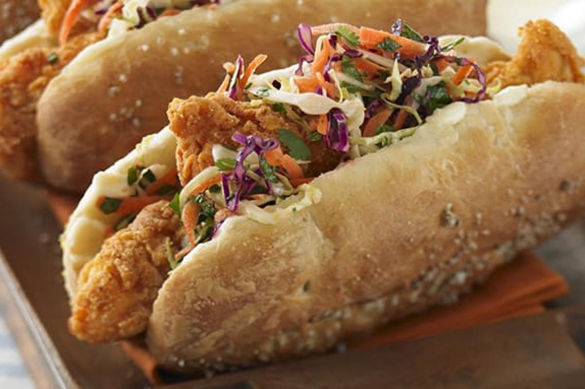

Chicken-Po-Boyy

Description
An easy recipe for chicken po boy, a delicious alternative version of the traditional Louisiana sandwich usually prepared with fried shrimps or roast beef.
Ingredients
- 200 g, red and green, finely shredded cabbage
- 1 medium, coarsely shredded carrot
- 6g fresh, coarsley chopped mint
- 6g fresh, coarsely chopped coriander
- 1/2 tsp chili pepper
- 1 1/2 tsp lime juice
- 1 1/2 tbsp olive oil
- kosher salte, to taste
- 110 g all purpose flour
- 50 g yellow cornmeal
- 1 tsp cayenne pepper
- 225 ml buttermilk
- 1 large egg
- 675 g, chicken breasts, skinless, boneless, cut into 1 inch thick strips
- vegetable oil for frying
- 6 rools split bread
- mayonnaise
Steps
- To prepare the chicken po boy first combine cabbage, carrot, mint, cilantro, and chile in a bowl.
- Stir in lime juice and olive oil and season with salt.
- In a pie plate mix flour, cornmeal, salt, and cayenne.
- In a medium bowl, whisk buttermilk and egg to combine.
- Dredge chicken in flour mixture, dip into buttermilk mixture, then return to flour mixture, turning to coat all sides.
- Pour 1 inch of oil into a large pan over medium-high heat.
- When oil reaches 175º C, add chicken in a single layer, and cook until well browned all over and no longer pink in the center, about 6 minutes.
- As chicken is done, transfer to paper towels and sprinkle lightly with salt.
- Repeat process if necessary until all chicken is cooked.
- Spread sandwich rolls with mayonnaise.
- Divide chicken among rolls and top generously the chicken po boy with slaw.